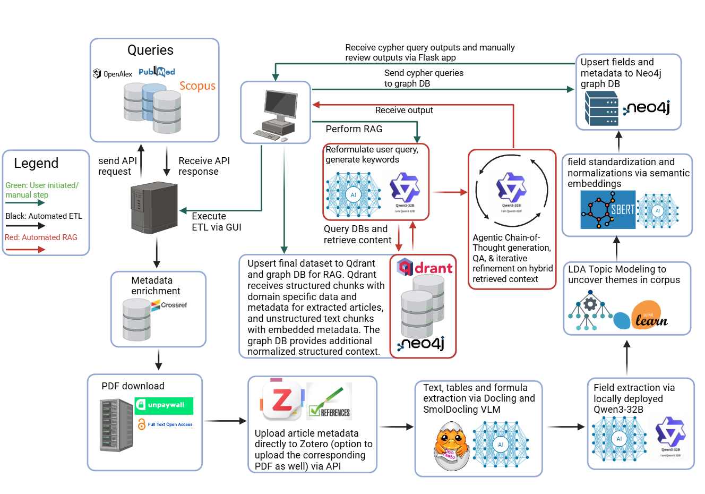

3 AI-Powered ETL & RAG System for Large-Scale Literature Analytics and Methodological Gap Analysis
#01-proposal.qmd
Working Title:
“AI-Powered ETL & RAG System for Large-Scale Academic Literature Analytics and Methodological Gap Analysis in Geospatial Epidemiology and Life Cycle Assesments”
4 Overall Goal
I aim to create an end-to-end automated pipeline to:
- Extract, Transform, and Load (ETL):
- Collect academic articles using PubMed and OpenAlex, retrieving PDFs in bulk through Unpaywall.
- Extract structured text, tables, domain-specific metrics, and methodologies from articles.
- Store and manage metadata systematically in Zotero.
- Generate structured datasets for detailed analytical use.
- Retrieval-Augmented Generation (RAG):
- Embed literature into a semantic vector database (Qdrant) to enable advanced semantic search.
- Generate insightful summaries using large language models.
- Identify research gaps, specifically targeting underrepresented geospatial and machine learning methods in the study of ozone exposure and heart disease.
The core objective is to leverage this pipeline to first identify methodological gaps, then directly apply novel or underutilized analytical techniques to the CDC’s ozone and heart disease datasets, thus bridging theory with impactful application.
5 Application Scenario
The ETL & RAG system will facilitate a systematic review of research intersecting:
- Ozone exposure and health outcomes (heart disease).
- Geospatial epidemiological techniques.
- Machine learning methodologies.
Through semantic querying, the pipeline will explicitly reveal:
- Commonly applied geospatial analysis techniques (spatial regression, kriging, hotspot analysis).
- Prevalent machine learning methods (Random Forest, XGBoost, Neural Networks).
- Underrepresented or novel methodologies within existing literature.
The identified methodological gaps will guide my selection of innovative or less-explored techniques, which will subsequently be implemented on publicly available CDC datasets involving ozone exposure and heart disease outcomes. This demonstrates the practical value of the developed ETL and RAG tools in directly informing and enhancing geospatial epidemiological research.
6 Personal Motivation & Investment
Manual literature reviews and data extraction are notoriously time-consuming. Recognizing these limitations, I personally invested in specialized hardware (multiple GPUs, 512 GB RAM, upgraded motherboard) to handle large-scale PDF processing, geospatial analysis, ML model training, and computationally intensive inference tasks. This investment reduces reliance on restrictive and bureaucratic access to university cluster computing (such as single GPU allocations or indirect access protocols) and costly API services (Azure Document Intelligence, OpenAI API), ensuring economic sustainability for long-term, large-scale usage.
7 Why It’s Interesting
- Interdisciplinary Impact: Applicable to diverse research domains beyond epidemiology.
- Innovation Alignment: Potentially valuable to institutions such as UAlbany’s AI Plus Institute.
- Flexible Framework: Easily adaptable for analyzing unstructured datasets outside academic literature.
8 Timeline
| Weeks | Tasks |
|---|---|
| 1–2 | PDF collection, text extraction, dataset synthesis |
| 3–4 | Identify methodological gaps via RAG pipeline |
| 5–6 | Apply identified methods to CDC geospatial datasets |
| 7–8 | Final analyses and interactive Quarto presentation |
9 Interdisciplinary Collaboration and Cross-Domain Utility
Retrieval-Augmented Generation (RAG) facilitates interdisciplinary research by connecting knowledge domains through new data incorporation during generation (Luu and Buehler (2023)). RAG-powered academic search tools enable complex, natural language queries, improving cross-field literature synthesis over traditional methods (J. Bolaños et al. (2024)). RAG’s integration into LLMs enhances their adaptability for diverse research applications (Lee and Kim 2024), demonstrated by systems that retrieve precise COVID-19 health information (Upadhyay and Viviani (2025)) or integrate findings on sustainable biomaterials.
Knowledge graph-based methods promote interdisciplinary collaboration by mapping research concepts across domains via graph mining in literature analytics (J. Bolaños et al. (2024)). Platforms like NetMe 2.0 create interactive knowledge graphs from biomedical literature, allowing shared exploration of connections by diverse specialists (Di Maria et al. (2024)). Aligning LLMs with domain knowledge graphs improves multi-hop reasoning across distinct corpora (Dernbach et al. (2024)). Logic-Augmented Generation allows experts from multiple fields to collaboratively build and reconcile knowledge (Gangemi and Giovanni Nuzzolese (2025)). LLM-driven ontology creation also integrates varied datasets from different domains, such as urban systems, to improve interdisciplinary data sharing (Tupayachi et al. (2024)).
9.1 Interdisciplinary Impact Example
Beyond its application in geospatial epidemiology, the inherent flexibility of the AI-Powered ETL & RAG system architecture makes it directly applicable to other complex, data-intensive research domains such as Life Cycle Assessment (LCA) for agricultural systems, particularly concerning cover crop GWP and the compilation of Life Cycle Inventories (LCI). The existing ETL pipeline (including fast_pubmed.py, fast_openalex.py) can be readily aimed at literature pertaining to LCA, GWP, and cover crop management. The core field_extraction.py module, configurable via etl_config.json and the project’s GUI (config_tab.py), is already equipped with extraction fields highly pertinent to LCA/LCI. Specifically, pre-defined fields such as “LCA System Boundaries”, “Environmental Impact Categories”, “Management Practices and Operational Details”, and the structured “Metrics” field (designed to capture {“Metric”: “name”, “Value”: “value”, “Unit”: “unit”}) are directly suited for systematically extracting quantitative LCI data (fertilizer inputs, fuel consumption, emission values, crop yields) and qualitative contextual information from a large corpus of relevant scientific articles.
The system’s capacity for knowledge structuration further enhances its utility for LCA/GWP research. The extensive existing knowledge base, comprising over 25 dictionaries with approximately 10,000 synonyms managed via dictionaries_gui.py (from dictionaries_config.json), includes relevant lexicons like “AGRONOMIC_MGMT_PRACTICES_SYNONYMS”, “ENVIRONMENTAL_IMPACT_CATEGORIES”, “COVER_CROP_SYNONYMS”, and “SOIL_TYPE_SYNONYMS”. These require only clicking a few checkboxes for LCA-specific terminology (specific LCI flow names, impact assessment methods, GWP characterization factors) within the GUI rather than development from scratch. The extracted and semantically unified data, including detailed LCI parameters and GWP values, is then processed by kg_pipeline.py to construct a domain-specific knowledge graph. This KG can serve as a queryable, literature-derived database of LCI components and GWP factors, enabling systematic comparison of different cover crop systems, validation of LCI data, and benchmarking of GWP model results, such as those from the previously developed Random Forest analysis for GWP_Total.
This application to LCA/GWP research effectively demonstrates the system’s broader “Interdisciplinary Impact” and its function as a “Flexible Framework” capable of large-scale, structured data extraction and analysis from scientific literature across diverse domains. By selecting fields within the GUI to prioritize LCA-relevant fields and refining the domain-specific dictionaries, the pipeline can efficiently build a comprehensive knowledge base to support detailed LCA studies and contextualize empirical GWP findings. This not only addresses specific research needs within agricultural systems analysis but also validates the core design principles of the ETL+RAG system for robust and adaptable automated literature analytics.
10 Societal Impact and Real-World Applications
AI-driven literature review systems provide societal benefits in public health and epidemiology by accelerating research timelines. For example, AI reduced data extraction time for a diabetic retinopathy review from 1,310 minutes to 5 minutes (Gue et al. (2024)), and an LLM completed a literature review in 17 hours compared to 100 hours for humans (Tsai, Huang, and Kuo (2024)). This efficiency supports quicker synthesis of findings that can influence policy development (J. Bolaños et al. (2024)). AI screening also minimizes costs while preserving high recall in evidence synthesis. These systems maintain high accuracy, with GPT-4 achieving 99% reviewer accuracy in systematic review tasks (Fleurence et al. (2024a)). Retrieval-Augmented Generation (RAG) contributes by enhancing AI output reliability and factuality. A RAG system achieved 86% diagnostic accuracy and 95% accuracy in citing sources, aiding hallucination detection (Tozuka et al. (2024)). RAG is a recognized strategy to mitigate hallucinations, improve factuality (Huang et al. (2024); Aditya (2024)), and enhance topical relevance with factual accuracy in health information retrieval (Upadhyay and Viviani 2025).
11 Ethical Considerations and Responsible AI Implementation
Automated literature extraction and synthesis systems raise specific ethical issues requiring careful management. Transparency, risk classification, and fairness-accountability-transparency-ethics (FATE) measures are necessary, aligning with regulations like the EU AI Act (J. Bolaños et al. (2024)). Systems require explicit bias mitigation strategies to prevent skewed evidence bases from automated screening (Tsai, Huang, and Kuo (2024)). The use of generative AI for scholarly tasks underscores the need for formal ethical guidelines and researcher training (Yuan et al. (2024)). Factual inaccuracies and hallucinations in foundation models present threats to scientific rigor if not addressed (Fleurence et al. (2024a)). Additionally, these systems pose privacy and data protection challenges due to the risk of large models memorizing and reproducing sensitive data, necessitating compliance with HIPAA, GDPR, and the EU AI Act.
12 Literature Review

12.1 Introduction
Retrieval-Augmented Generation (RAG) is a machine-learning framework combining information retrieval with deep-learning models, such as transformer-based large language models (Rawson 2024). This approach enhances factual accuracy, coherence, and context relevance of generated responses by incorporating retrieved information into the generation process (Li and Lai 2024). Within geospatial epidemiology, particularly concerning ozone exposure and heart disease, RAG offers a tool for synthesizing spatial and temporal data from environmental and health datasets. By integrating parametric memory of large language models with non-parametric external knowledge bases, RAG supports researchers. For example, RAG can help identify critical knowledge gaps and underrepresented methodologies (Barnett et al. 2024), and improve the factual accuracy of health information (Upadhyay and Viviani 2025), advancing the understanding of chronic disease risk factors.
12.2 Technical Background
RAG combines deep learning with traditional information retrieval, integrating parametric and non-parametric memory systems to enhance text generation accuracy. The parametric component involves transformer-based neural models, such as sequence-to-sequence architectures (BART, T5, LLaMA), that store learned information within model weights and can be fine-tuned for specific tasks (Rawson 2024; Feng et al. 2024). Non-parametric memory relies on external databases indexed as dense vector representations, queried using neural retrievers like Dense Passage Retriever (DPR) or dual-encoder architectures, enabling retrieval of contextually relevant information without model retraining (Rawson 2024; Şakar and Emekci 2024). Transformer-based architectures are employed in RAG pipelines for their language modeling capabilities, facilitating coherent and contextually informed responses. The combination of transformer generators and retrieval encoders improves accuracy, relevance, and freshness of generated content by leveraging external, updateable knowledge bases (Fan et al. 2024; Wang et al. 2024). RAG systems bridge gaps between static, trained model knowledge and evolving external data sources, often outperforming traditional NLP methods in factual precision and resource efficiency (Li and Lai 2024; Upadhyay and Viviani 2025).
12.3 Empirical Evidence and Performance Evaluation of RAG Systems
Empirical evaluation of RAG assesses its enhancement of factual accuracy, retrieval effectiveness, and efficiency in text generation. Studies like Fateh Ali et al. (2024) compared RAG-based pipelines against conventional NLP approaches, including transformer-only models and frequency-based topic modeling, finding RAG superior based on higher ROUGE-1 (0.364) and ROUGE-2 (0.123) scores. Upadhyay and Viviani (2025) demonstrated RAG’s effectiveness in health-information retrieval, nearly doubling performance metrics like CAM NDCG (0.2146 vs. 0.1119) and CAM MAP (0.1079 vs. 0.0455) compared to non-RAG systems. A central hypothesis is that integrating retrieval with generation boosts the accuracy, reliability, and contextual relevance of outputs.
Studies employed experimental designs comparing RAG models with multiple baselines, including transformer-based models (T5, GPT-3.5), frequency-based methods (spaCy), and traditional IR techniques (BM25). Data sources included academic corpora, scientific literature collections, and clinical notes, selected for relevance, quality, and representativeness (Li and Lai 2024; Rawson 2024; Shah-Mohammadi and Finkelstein 2024). Common evaluation metrics included ROUGE scores, precision, recall, F1-scores, CAM-MAP, and CAM-NDCG, assessing textual relevance, accuracy, and coherence.
Quantitative results from empirical studies indicate RAG’s improved performance in generating contextually accurate and relevant outputs. For example, Kreimeyer et al. (2024) reported RAG reproducing over 80% of expert-curated information in oncology literature, indicating reliability and precision. Gu et al. (2024) demonstrated RAG’s efficiency gains by reducing manual systematic review extraction time from 1.310 minutes to 5 minutes, without sacrificing data quality. These studies highlight RAG’s strengths but also emphasize managing retrieval parameters (e.g., chunk size, embedding strategies) to avoid retrieval inaccuracies or context misalignment (Barnett et al. 2024).
12.4 Applications in Systematic Reviews and Evidence Synthesis
RAG streamlines evidence collection in systematic reviews by combining parametric and non-parametric memory systems. These systems pair neural sequence-to-sequence generators with dense-vector indices queried by neural retrievers, automating the identification and extraction of relevant literature (Rawson 2024; Şakar and Emekci 2024). This automation reduces the manual workload associated with literature screening and data extraction. For instance, GPT-3.5 Turbo with RAG reduced data extraction time in systematic reviews from 1,310 minutes to 5 minutes, maintaining high concordance with human reviewers for extracting structured data (Gu et al. 2024).
RAG also enhances the accuracy and consistency of data extraction processes. In health information retrieval tasks, RAG-driven models demonstrated improved topical relevance and factual accuracy, with improved performance metrics such as CAM-MAP and CAM-NDCG compared to traditional information retrieval methods (Upadhyay and Viviani 2025). Furthermore, RAG with quantized LLMs improves data extraction accuracy (exceeding 93%) while reducing computational resource demands (Ranjan Maharana and Joshi 2024). These approaches improve efficiency and can mitigate human biases, aiding uniformity in evidence synthesis.
Advanced RAG implementations in systematic reviews leverage semantic search capabilities through dense-vector indices and neural retrieval methods. This approach often retrieves literature with greater contextual understanding than conventional keyword-based searches. When such retrieval is combined with large language models for generation, it can support the identification of relevant and potentially overlooked literature. Recent empirical studies illustrate that integrating RAG into literature review processes yields better summarization accuracy, with measurable improvements in ROUGE metrics compared to other NLP methods (Fateh Ali et al. 2024). This demonstrates RAG’s capability to provide accurate, contextually relevant summaries for high-quality evidence synthesis.
12.5 Applications in Public Health and Epidemiology
RAG applications in Public Health and Epidemiology enhance information synthesis and decision-making. RAG systems ground responses in current, domain-specific evidence by incorporating information from diverse sources like clinical guidelines and surveillance data, improving factual accuracy (Rawson 2024; Li and Lai 2024). This capability aids public health professionals in synthesizing evolving information for interventions. Examples include updating knowledge bases for health worker training (Al Ghadban et al. 2023), streamlining surveillance via clinical note data extraction (Shah-Mohammadi and Finkelstein 2024), and processing large document sets for key point summarization with tools like ‘Cognitive Reviewer’ (Barnett et al. 2024). RAG also automates accurate structured dataset creation from literature (Ranjan Maharana and Joshi 2024). Policy experts recognize RAG for improving accuracy in evidence synthesis (Fleurence et al. 2024b).
In health communication and public engagement, RAG contributes to generating clear, accurate, and personalized health information. For instance, RAG integrated into models for breast-cancer nursing care questions yielded high user-rated accuracy and empathy (R. Xu et al. 2024). RAG-driven systems are also used to train frontline health workers by providing traceable, guideline-based information adaptable to evolving clinical knowledge (Al Ghadban et al. 2023). By enhancing topical relevance and factual accuracy in consumer health information retrieval and constraining hallucinations, RAG contributes to reliable health education and efforts against misinformation (Upadhyay and Viviani 2025).
12.6 Identification of Methodological Gaps using Retrieval-Augmented Generation
RAG can be a meta-analytic tool to identify methodological gaps by processing scientific literature. RAG deployments map ‘failure points’ in various workflows, pinpointing areas with weak or insufficient methodologies (Barnett et al. 2024). For example, by analyzing large datasets, RAG reveals under-explored techniques like low-resource quantized LLMs, offering efficiency and accuracy benefits overlooked in conventional dataset-building (Ranjan Maharana and Joshi 2024). This capability allows surveying current methods and identifying areas lacking detailed research.
RAG application in benchmarking and comparative analysis exposes inconsistencies and under-researched areas. When used for evaluations, such as in multilingual medical question answering, RAG reveals performance drops in contexts like non-English languages, underscoring methodological blind spots or areas where methods lack robustness (Alonso, Oronoz, and Agerri 2024). Highlighting performance discrepancies helps recognize variations in methodological effectiveness or under-defined methods, surfacing research gaps (Barnett et al. 2024).
Insights from RAG application guide selecting and refining future research methodologies. RAG spotlights actionable improvements; for example, quantized LLMs reducing computational demand while improving accuracy suggests a methodological shift (Ranjan Maharana and Joshi 2024). RAG systems also recommend analytical strategies, such as guiding target selection in drug design or suggesting techniques to overcome limitations in traditional methods, informing future research (Zhang, Wang, and Sun 2024; H. Xu et al. 2024).
12.7 Discussion
The development of this automated Extract, Transform, Load (ETL) and Retrieval-Augmented Generation (RAG) pipeline was undertaken as a direct response to the inherent challenges of identifying a novel and impactful research topic within a complex domain like geospatial epidemiology. As highlighted in our course’s “Advice on Research,” selecting a research problem carefully, focusing on fundamentals, and finding a unique perspective in potentially crowded areas are crucial early steps. This system was engineered to provide a systematic and efficient methodology for this discovery process, using the intersection of ozone exposure, heart disease, and geospatial/machine learning techniques as its initial proving ground.
The pipeline’s architecture is tailored to facilitate an iterative research discovery workflow, as outlined in the project’s data collection and integration strategy. The rapid ETL phase, capable of processing hundreds of articles in minutes using modules like fast_pubmed.py and GPU-accelerated Docling (Auer et al. 2024), allows for an initial broad sweep of the literature. Subsequently, the integration of Latent Dirichlet Allocation (LDA) via topic_modeling_culda.py enables the automated categorization of this literature and, crucially, the identification of “weakly populated or contradictory clusters,” which serve as indicators of potential knowledge gaps or under-explored methodological niches. This aligns with the goal of finding less “crowded” research areas. The system then leverages these insights to refine search queries, allowing for a more targeted collection of literature to deepen understanding around these identified gaps. This iterative process of broad collection, gap identification via topic modeling and LLM interpretation, and refined collection is central to the system’s utility in topic formulation.
Furthermore, the RAG component, with its knowledge graph integration (Neo4j, kg_pipeline.py, inspired by Tu et al. (2024)) and novel Reciprocal-Rank Fusion (RRF) for precise retrieval, allows for nuanced exploration of these identified gaps. It enables users to query the enriched, gap-focused corpus to understand existing methodologies and pinpoint specific underrepresented geospatial or machine learning approaches. The high metadata similarity scores (Levenshtein >0.90) and stringent QA processes aim to ensure that the insights derived are based on accurate data, supporting the selection of a research question that is both relevant and methodologically sound. The system’s current application to the literature on ozone exposure and heart disease, with the intent to link findings to CDC datasets, serves as a practical demonstration of how this pipeline can navigate from a broad area of interest to a specific, data-informed research question, thereby operationalizing the principles of effective research topic selection. The pipeline doesn’t just automate literature review; it structures the exploratory phase of research itself.
12.8 Conclusion
The primary contribution of this work is the development and practical demonstration of an automated ETL+RAG pipeline designed as a robust tool for systematically identifying research gaps and formulating novel research questions in complex scientific fields such as geospatial epidemiology. This system directly addresses the challenge of selecting a meaningful research topic by providing an efficient, scalable, and transparent framework for navigating and analyzing vast quantities of academic literature. By integrating rapid data ingestion, advanced PDF content extraction, iterative topic modeling for gap identification, and sophisticated RAG capabilities, the pipeline operationalizes key advice for effective research, enabling a structured approach to move from broad exploration to specific, actionable research directions.
The value of this pipeline lies in its capacity to empower researchers, particularly those embarking on new projects or exploring interdisciplinary areas, to efficiently discover under-explored methodological niches or substantive knowledge gaps. In the context of this project, it has laid the groundwork for pinpointing underrepresented geospatial and machine learning techniques in the study of ozone exposure and heart disease. More broadly, this process-oriented tool offers a significant advancement over traditional manual methods, demonstrating how AI can be leveraged not just for data analysis, but for the foundational stage of research discovery itself, fostering methodologically sound and impactful inquiry.
12.9 Future Directions
Future development of this ETL+RAG pipeline will focus on enhancing its efficacy as a research discovery tool and broadening its application. A key priority is the refinement of the quality assurance (QA) process to reduce the “occasional false negatives” and improve the precision of gap identification. This involves exploring more dynamic error detection and advanced hallucination mitigation strategies for the LLM components (Huang et al. 2024; Fan et al. 2024).
From a research process perspective, the immediate next step involves applying the methodologies identified by the pipeline to the large-scale CDC datasets on ozone and heart disease. This will involve implementing relevant machine learning approaches (e.g., Random Forest, geospatial cross-validation) to analyze these datasets, thereby empirically validating the research gap identified by the pipeline and completing the class project’s analytical component. The insights from this application will also serve as a feedback loop for further refining the pipeline’s gap identification capabilities.
Further enhancements to the pipeline itself will include exploring computational efficiencies, such as the integration of quantized LLMs (Ranjan Maharana and Joshi 2024) and optimized retrieval mechanisms (Wang et al. 2024), to manage costs and improve processing speeds for even larger literature corpora. Incorporating more sophisticated uncertainty-aware retrieval (Dhole 2025) and explicit bias detection mechanisms (Li and Lai 2024) will also be critical. Finally, the modular design of the pipeline lends itself to expansion. Future work will aim to test its generalizability by applying it to identify methodological gaps in other epidemiological areas and diverse scientific domains, potentially fine-tuning domain-specific LLMs to enhance its utility for a wider range of research discovery tasks.
13 Data Management
13.0.1 Sources:
- PubMed (biomedical focus)
- OpenAlex (multidisciplinary coverage)
13.0.2 Volume:
- Initially targeting up to 1,000 PDFs, expandable with resources.
13.0.3 Formats:
- PDFs with metadata (DOI, authors, journal information).
- Extracted content stored as structured Feather files.
- Semantic embeddings stored in Qdrant vector databases for efficient querying.
14 Expected Results
14.0.1 1. Automated Literature Workflow
- Complete Python-based ETL and RAG pipeline enabling seamless, automated literature ingestion, extraction, summarization, and gap analysis.
14.0.2 2. Identification of Methodological Gaps
- Clear delineation of underused geospatial and machine learning methodologies within ozone and heart disease epidemiological literature.
14.0.3 3. Innovative Geospatial Analysis
- Practical application of identified novel or lesser-utilized methods to CDC datasets.
- Publication-quality analytical outcomes demonstrating the practical utility of identified methodologies.
14.0.4 4. Final Presentation and Documentation
- An interactive Quarto-based report demonstrating literature-derived insights, identified research gaps, and innovative geospatial analytical outcomes.
15 Example data extraction functions
In this section, I provide sample code snippets that I’ve developed for the ETL pipeline. Each function targets a specific stage: PubMed metadata fetching, PDF retrieval from Unpaywall, Docling-based text extraction, Zotero integration, etc. All code generated with the assistance of AI
15.1 Module: fast_pubmed.py
Description:
A drop-in turbo-replacement for the two original helpers:
pubmed_search_chunkedfetch_pubmed_metadata
Key features: - < 1 s single esearch to collect up-to-10,000 PMIDs. - Thread-pooled, rate-limited bulk-efetch (≤ 3 req/s/IP – NCBI TOS). - Parses the same rich metadata as previously used: Authors, Date, Journal, Volume, Issue, Pages, plus Title / DOI / Abstract. - Robust logging with granular exception capture; a bad article never aborts the batch. - No hard-wired globals; everything is configurable via keyword args.
15.2 Module: fast_openalex.py
Description:
A Python module for rapidly querying and retrieving scholarly records from the OpenAlex API, designed to complement PubMed searches by capturing literature not indexed in PubMed. Utilizing asynchronous I/O and parallel processing, this tool fetches article metadata at scale, parsing and formatting results into a convenient DataFrame for immediate integration into the analysis pipeline.
Key Features:
- High-Speed Retrieval: Uses asynchronous API requests (
aiohttp) and concurrent fetching to maximize throughput while respecting rate limits. - Efficient Pagination: Automatically handles pagination and cursor-based retrieval, fetching results swiftly and transparently.
- Robust Parsing and Cleaning: Extracts and cleans metadata such as DOI, abstracts, authorship, publication dates, journal information, and page ranges, ensuring standardized, analysis-ready outputs.
- Easy Integration: Provides a simple wrapper (
search_works_df) that returns results in a Pandas DataFrame consistent with existing data processing workflows. - Polite API Interaction: Adheres strictly to recommended OpenAlex rate limits, ensuring reliable, long-term API access without throttling.
- Configurable & Flexible: Easily adjustable query parameters, such as items per page, concurrency level, and query-per-second rate, allow for custom optimizations.
Ideal for comprehensive literature reviews, systematic analyses, and dataset augmentation tasks that require accessing a broader scope of scholarly publications beyond traditional indexing services like PubMed.
15.3 Module: etl_elsevier.py
Description:
A Python module for retrieving scholarly articles from Elsevier’s Scopus database, integrating with the existing ETL workflow. It uses asynchronous requests (aiohttp) to fetch article metadata, enriches records via Crossref, and handles data parsing, error management, and structured data outputs.
Main Functionalities:
The module retrieves metadata from Scopus using paginated requests while adhering to Elsevier’s API rate limits and parsing key metadata such as DOI, Scopus ID, titles, and journal information. It concurrently enriches this data with additional details from Crossref, including authors, abstracts, and PDF links, incorporating error handling, retries, and standardized field formatting. Configuration settings—including API credentials, endpoints, rate limits, concurrency, and logging—are managed externally via a JSON file (etl_config.json), which supports flexible adjustments and provides detailed logging for error tracking. The final enriched metadata is structured into Pandas DataFrames with standardized columns optimized for downstream ETL workflows.
Key Features:
- Asynchronous Requests: Utilizes asyncio/aiohttp for scalable, concurrent API requests, improving throughput.
- Flexible Configuration: All configurations (API keys, search parameters, file paths) managed via external JSON for flexibility.
- Robust Parsing & Data Integrity: Implements metadata parsing with safeguards to maintain data quality.
- Comprehensive Logging: Detailed logging provides real-time insights into data fetching, processing status, and error handling.
Ideal for comprehensive literature reviews, systematic analyses, and dataset augmentation tasks that require accessing a broader scope of scholarly publications beyond traditional indexing services like PubMed.
15.4 Module: async_unpaywall.py
Description:
A helper function for quickly retrieving full-text PDFs from the Unpaywall API given DOI identifiers. Ideal for automated bulk PDF downloads in an ETL workflow.
Key features:
- Uses Python’s asynchronous libraries (
asyncio+aiohttp) for concurrent fetching. - Adheres to Unpaywall’s API limits (≤ 8 requests per second).
- Supports optional proxy rotation for reliability.
- Automatically sanitizes PDF filenames, preventing file-system errors.
- handles HTTP failures, missing PDFs, and other edge cases with logging.
15.5 Module docling_extract_formulas_mp_multi.py
Description:
A multiprocessing-optimized PDF extraction module using Docling’s layout analysis capabilities, enriched with GPU acceleration. It converts PDFs into structured text, accurately extracting elements such as tables, equations, and formatted text.
Key features:
- Multi-process parallelization with GPU allocation for optimized throughput.
- Extracts full document text as Markdown, handling complex formatting and special characters.
- Specialized extraction for embedded LaTeX formulas and structured table data.
- error handling and logging ensure resilience against problematic PDFs.
- Integrated token-counting for downstream NLP workflows.
View the full script (docling_extract_formulas_mp_multi.py) on GitHub
15.6 Module: fast_zotero.py
Description:
A helper module designed forintegration with Zotero citation management workflows. Enables batch creation of Zotero items, parallelized PDF uploads, and automatic citation formatting via local citeproc rendering.
Key features:
- batch creation of Zotero items (up to 50 items per API call).
- Parallelized PDF attachment uploads via thread pooling.
- Local citation rendering using the CSL (
citeproc) engine for instant citation generation without API latency. - Optional fallback to Zotero’s built-in citation rendering API if local citation rendering encounters issues.
- customizable citation-style handling through a configurable local CSL style registry.
15.7 Module: field_extraction.py
Description:
A extraction module that enhances a Feather-format DataFrame by retrieving structured metadata fields through iterative Large Language Model (LLM) calls. It uses techniques for JSON parsing, LLM response caching, tokenization, parallelized processing, and merging strategies to maintain data integrity and avoid duplication.
Key features:
- Robust JSON Parsing: Cleans and interprets LLM-generated JSON output, handling common formatting errors.
- Intelligent LLM Caching: Avoids redundant API calls by caching LLM responses based on prompt content hashes.
- Parallel Processing: Employs thread pools for efficient concurrent handling of multiple data rows and text chunks.
- Dynamic Text Chunking: Splits long texts into manageable segments to stay within LLM token limits, ensuring comprehensive extraction.
- Field Unification: Carefully merges newly extracted data with existing metadata, ensuring consistency and preventing duplication, especially within structured fields such as numeric metrics.
- Comprehensive Logging: Detailed logging and exception handling provide transparency and facilitate troubleshooting.
This module is particularly optimized for workflows involving complex metadata extraction scenarios, such as academic literature reviews, where accuracy, scalability, and structured data consistency are crucial.
15.8 Module: topic_modeling_culda.py
Description:
A Python module for performing topic modeling on large document collections using parallelized workflows. It combines text preprocessing with Latent Dirichlet Allocation (LDA) modeling, supporting both scikit-learn and Gensim frameworks. The module emphasizes computational efficiency through parallel processing, optimized BLAS thread usage, and structured hyperparameter searches to achieve the highest-quality topic coherence.
Key features:
- Robust Preprocessing: Efficiently cleans text by removing references, standardizing formats, tokenizing, removing stopwords, and lemmatizing.
- Parallel Processing: Utilizes multiprocessing and threading for rapid tokenization, preprocessing, and dominant-topic extraction, significantly speeding up operations on large datasets.
- Flexible LDA Implementation: integrates scikit-learn’s LDA models with fallback support for Gensim models, ensuring consistent performance and reliability.
- Hyperparameter Optimization: Uses exhaustive grid search across critical LDA parameters (e.g., number of topics, bigram/trigram thresholds), optimizing for coherence scores.
- Dominant Topic Identification: Efficiently extracts and summarizes the most significant topics per document, indicating their contribution and top keywords.
- Detailed Logging and Error Handling: Provides logging at each processing step, simplifying debugging and ensuring transparency of the modeling process.
Ideal for research-intensive tasks such as systematic literature reviews, thematic content analysis, or exploratory text analysis, this module enhances productivity and result quality through its structured approach.
Source code:
View the full script (topic_modeling_culda.py) on GitHub
15.9 Module: kg_pipeline.py
Description:
The kg_pipeline.py script serves as a integration module that transforms structured article metadata and analytical results into a Knowledge Graph (KG) within a Neo4j database. It handles entity and relationship management, ensures data integrity via constraints, and uses unified terminology dictionaries for consistent entity naming.
Main functionalities include:
- Neo4j Integration:
- Establishes connection and handles transactional updates to Neo4j.
- Uses merge operations to add/update entities such as Articles, Study Types, Soil Types, Cover Crops, and more.
- Entity Unification:
- Applies extensive synonym unification via
dictionaries.pyto standardize terminology across various fields, ensuring consistency and accuracy in the knowledge graph.
- Applies extensive synonym unification via
- Dynamic Schema Management:
- Automatically sets up Neo4j constraints to maintain schema integrity and database performance.
- Error Handling & Logging:
- Comprehensive logging and exception handling facilitate easy debugging and robust data integrity verification during the KG construction process.
- Integration with Topic Modeling:
- Incorporates dominant topics and associated metadata, linking textual analysis results directly within the KG.
Source code:
View the full script (kg_pipeline.py) on GitHub
15.10 Module: dictionaries.py
Description:
This module contains dictionaries used for unifying terminology across numerous categories in the ETL pipeline. With thousands of terms and synonyms across 30+ dictionaries, it supports consistency and accuracy of entity representation within the knowledge graph.
Key Dictionaries Include: - Study Types - Environmental Impact Categories - Management Practices - Cover Crops - Tillage Practices - Metric Names - Machine Learning Methods - and many more.
These unified dictionaries provide synonym resolution capabilities to handle variations in terminology commonly encountered across scientific literature.
Source code:
View the full dictionaries (dictionaries.py) on GitHub
15.11 Complete Pipeline Execution Notebook
You can view and execute the entire ETLpipeline at the following link:
View the complete repository (gui_proj) on GitHub